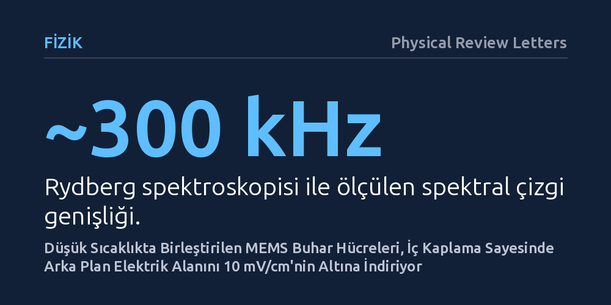

FIZIK · Physical Review Letters · 2026-10-13
Araştırmacılar, Rydberg kuantum algılayıcılarında kullanılan mikro buhar hücrelerinin iç yüzeyini koruyucu bir tabakayla kaplayan düşük sıcaklıklı birleştirme yöntemi geliştirdi. Bu yöntem sezyum atomlarının çeperlere yapışmasını önleyerek hücre içi arka plan elektrik alanını santimetrede 10 milivoltun altına düşürdü.
Minyatür kuantum sensörlerinde ölçüm hassasiyetini bozan en büyük engellerden biri olan iç yüzey kaynaklı elektriksel parazit ve atom kaybı, düşük sıcaklıkta yüzey kaplama tekniğiyle aşılabiliyor.

Atomların hassas enerji düzeylerini temel alan kuantum algılayıcılar; yüksek duyarlılıklı atomik saatler, jiroskoplar ve radyo frekansı sensörleri geliştirmede vazgeçilmez bir role sahiptir. Bu tür hassas cihazların taşınabilir sistemlerde kullanılabilmesi için içinde gaz halindeki atomları barındıran buhar hücrelerinin mikroelektromekanik sistemler (MEMS) ölçeğinde küçültülmesi gerekir. Ne var ki hücre boyutları küçüldükçe, hazne çeperlerinin içerideki atomlar üzerindeki olumsuz etkisi belirgin biçimde artar.
Radyo frekanslarını algılamada kullanılan ve dış etkilere olağanüstü duyarlı olan Rydberg durumundaki atomlar, buhar hücresinin iç yüzeylerinde oluşan statik elektrik alanlardan hızla etkilenir. Bu iç alanlar atomların enerji seviyelerini kaydırarak ölçüm doğruluğunu zedeler. Üstelik hazneye konan sezyum atomları çeperlere çarparak yapışır. Çeperleri koruyucu organik katmanlarla kaplamak bu sorunu çözebilir; ancak mikro hücreleri sızdırmaz şekilde kapatmak için uygulanan geleneksel anodik birleştirme sıcaklıkları bu narin kaplamaları yok eder.
Araştırmacılar bu üretim engelini aşmak amacıyla organik kaplamayı tahrip etmeyen düşük sıcaklıklı bir yapıştırma yöntemi geliştirdiler. Yüzey koruması için oktadesiltriklorosilan (OTS) adlı, yüzeyde kendiliğinden tek moleküllü düzenli bir katman kuran organik molekül tercih edildi. Bu kaplamanın temel görevi, sezyum atomlarının çeperlere tutunmasını engellemek ve yüzeyden kaynaklanan elektriksel yükleri baskılamaktır.
Geleneksel anodik birleştirmenin yüksek sıcaklıkları yerine moleküler yapıyı koruyan düşük sıcaklık koşulları kullanıldı. Böylece mikro hücre hem sızdırmaz biçimde kapatıldı hem de iç boşluğundaki koruyucu tabaka işlevini korudu. Hücrenin başarısı, içine hapsedilen sezyum atomlarının Rydberg spektroskopisiyle taranmasıyla deneysel olarak sınandı.
Spektroskopi ölçümleri, geliştirilen yöntemin hücre içi ortamı oldukça kararlı kıldığını ortaya koydu. Sezyum atomlarının Rydberg geçişlerinde yaklaşık 300 kilohertz (kHz) mertebesinde dar spektral çizgi genişlikleri gözlendi. Çizgilerin dar kalması, atomların yüzeyle rastgele çarpışıp kuantum durumlarını kaybetmediğini gösterir.
Atomların enerji seviyelerindeki kaymalar incelendiğinde, hücre çeperlerinin ürettiği artık statik elektrik alanının santimetrede 10 milivoltun (< 10 mV cm⁻¹) altında kaldığı belirlendi. Bu sonuç, iç yüzey kaplamasının hedef sinyalleri bozan elektriksel arka plan gürültüsünü etkili biçimde sınırladığını ve sezyum atomlarının duvara yapışmadan gaz fazında kaldığını kanıtladı.
Bu bulgular, atom tabanlı radyo frekansı alıcılarında her bir buhar hücresinin aynı kararlılıkta ve öngörülebilir şekilde çalışabilmesi için kritik bir adım oluşturuyor. Algılanan radyo dalga boyu ile hücre boyutu arasındaki oran geniş bir aralığa yayıldığından, dış sinyali bozmamak adına hücre çeperlerinin elektriksel açıdan pasif kalması zorunludur.
Düşük sıcaklıkta birleştirme tekniğinin organik iç kaplamalarla uyumlu çalışabilmesi, MEMS tabanlı kuantum aygıtların pratik ve taşınabilir boyutlara indirilmesinde karşılaşılan uzun süreli bir imalat sorununa çözüm sunuyor. Yöntem henüz tekil prototip aşamasında olsa da gelecekteki kuantum sensörlerinin minyatürleşmesi için somut bir yol haritası çiziyor.